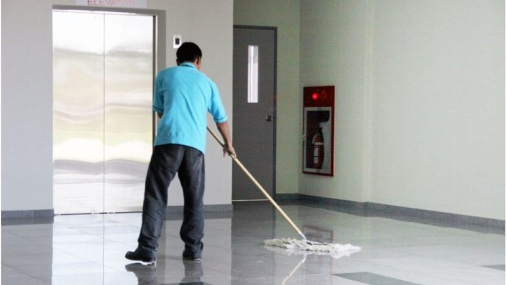
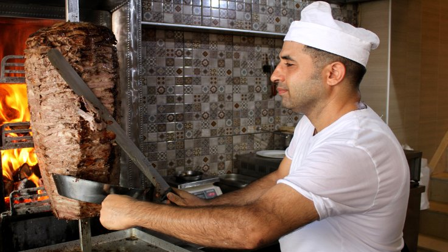

Adım Kamil Sayit 23 yaşında dünyayı dolaşan bir gencim. Neden dünyayı dolaştığımı sorucak olursan zamanında Bahçeşehir Üniversite'sinde Yazılım Mühendisliği bölümü öğrencisiydim ancak 5 yıllık müfredatı bir dönemde öğrendiğim için sıkıldım ve ayrıldım. O zamandan beri kendimi geliştirmek adına şehir şehir dolaşıp her türlü işe girip çalışmayı deniyorum belki bir gün dünyayı kurtabilirim.
| Hademe | Döner Ustası | Özel Öğretmen | Broşür Dağıtıcı |
|  |  |
Şu anda Norveç'in "Trondheim" şehrinde bir noodle restoranında yardımcı şef olarak çalışıyorum. Hedefim baş noodle şefi olup kendi ellerimle noodle hamuru açmak ancak hala daha yeterli yeteneğe sahip değilim. Toplamda 2 aydır bu şehirdeyim bu 2 ayın içinde ilk 20 gün boyunca iş bulamadım ve sokakta yatmak zorunda kaldım, çok eğitici bir deneyimdi şimdi noodle restoranında çalışıyorum ve bu beni heyecanlandırıyor. Gelecekte daha fazla ülkeye gitmek istiyorum.
Site'nin sahibi olarak gerçek ismim Habil Tataroğulları, 19 Yaşındayım ve Yazılım Mühendisliği 1.sınıf öğrencisiyim. Kamil Sayit ise kendi yarattığım ve maceralarını sevdiğim bir karekter.